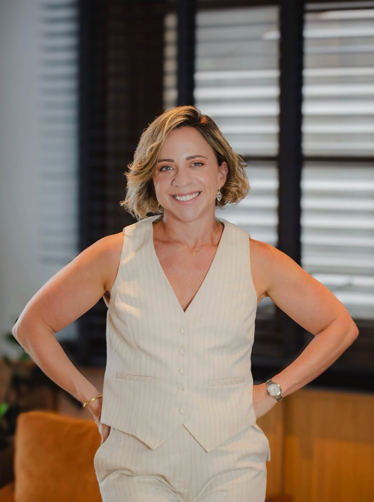

Uma trajetória que une visão jurídica e liderança.
SOBRE JENISE
Direito, gestão e desenvolvimento de pessoas.
Jenise Carvalho é advogada desde 2006 e sócia fundadora e gestora do MJAB — MJ Alves Burle e Viana Advogados. Sua trajetória une a prática jurídica à estruturação de operações e à liderança de equipes.
No escritório, atua em governança, compliance, gestão administrativa e financeira, inovação e tecnologia. Além disso, dedica-se ao desenvolvimento de sócios e colaboradores.
Uma carreira construída na conexão entre Direito, organização e liderança.
2004–2006
Primeiros passos no Mattos Filho
No Mattos Filho, atuou como assistente jurídico durante o estágio, coordenando estagiários e organizando informações para um contencioso societário complexo.
2008–2014
Coordenação jurídica
Advogada sênior no Kaufmann, Mota, Kalume Advogados, com coordenação jurídica e atuação nas áreas cível, imobiliária e de família.
2015–2019
Evolução no contencioso da FUNCEF
De advogada júnior a pleno na Coordenação de Contencioso Jurídico. Atuação na gestão de processos, elaboração de teses e articulação com escritórios terceirizados.
2019
Implantação da operação do Rio
No MJAB, assumiu a estruturação da unidade do Rio de Janeiro, desde a implantação física até a organização da operação, as contratações e a formação da equipe.
2020
Gestão também em Brasília
Passou a atuar na gestão do escritório de Brasília. Durante a pandemia, conduziu a reestruturação da operação, com foco em eficiência, responsabilidade financeira e reorganização das equipes.
2021
Sociedade patrimonial e visão de negócio
Tornou-se sócia patrimonial do MJAB, ampliando sua atuação estratégica em governança, compliance, gestão administrativa e financeira, inovação, tecnologia e desenvolvimento de carreiras.

LIDERANÇA E CONTRIBUIÇÃO
Desenvolver pessoas. Fortalecer organizações.
Na Alumna, atua na mentoria de carreira para universitárias de todo o país, com foco em grupos minorizados.
Entre 2022 e 2023, foi diretora executiva do SHE — Sustainable Humanitarian Empowerment, iniciativa humanitária ligada ao fortalecimento de mulheres afegãs e de suas famílias.
PARTICIPAÇÃO INSTITUCIONAL
Liderança também fora do escritório.
Foi vice-presidente da ADAFUNCEF, associação dos advogados da FUNCEF, entre 2017 e 2020. Na OAB/DF, seu histórico inclui as comissões de Sociedade de Advogados, Gestão de Escritórios e Previdência Complementar.
Períodos e outras comissões
Sociedade de Advogados da OAB/DF: ingresso em 2022. Gestão de Escritórios da OAB/DF: 2021–2022. Previdência Complementar da OAB/DF: 2017–2018. Na OAB/RJ, integrou a Comissão de Petróleo, Gás Natural e Biocombustíveis entre 2019 e 2021.
CONTRIBUIÇÃO SOCIAL
Gestão a serviço de iniciativas coletivas.
Entre novembro de 2020 e novembro de 2021, atuou voluntariamente como primeira tesoureira do Instituto Amor em Tempos de Dor.